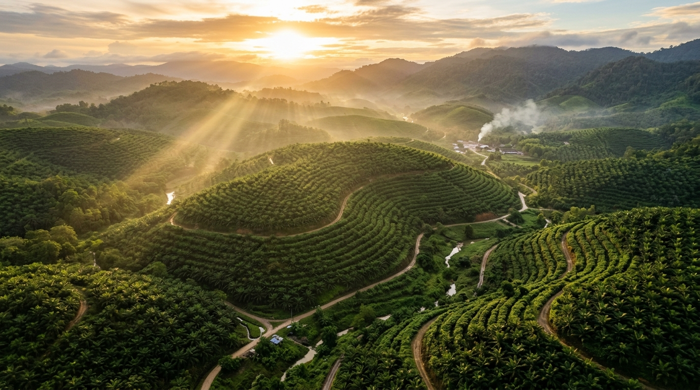
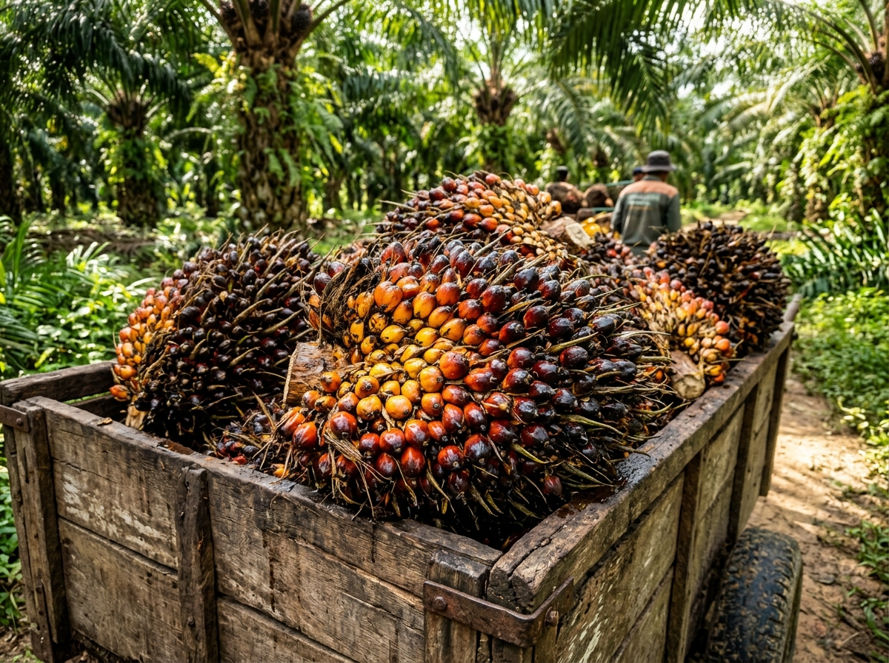
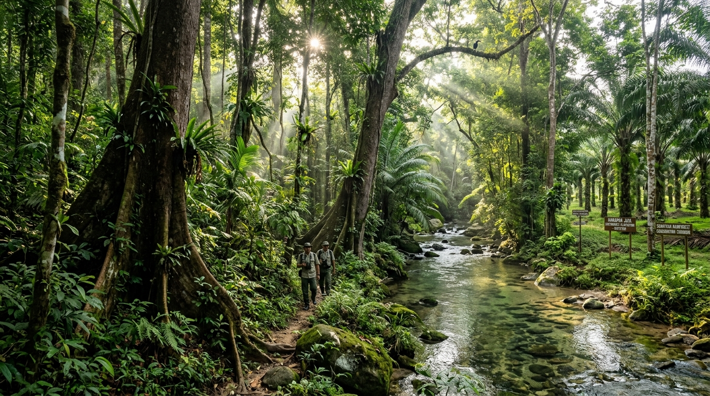
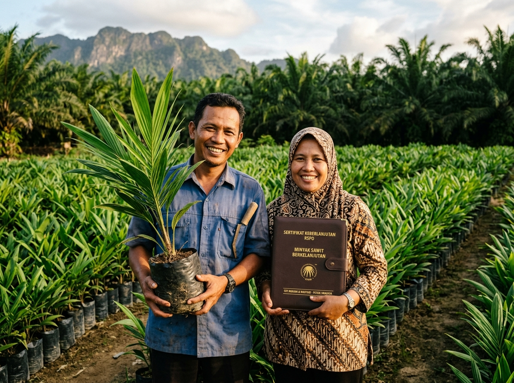
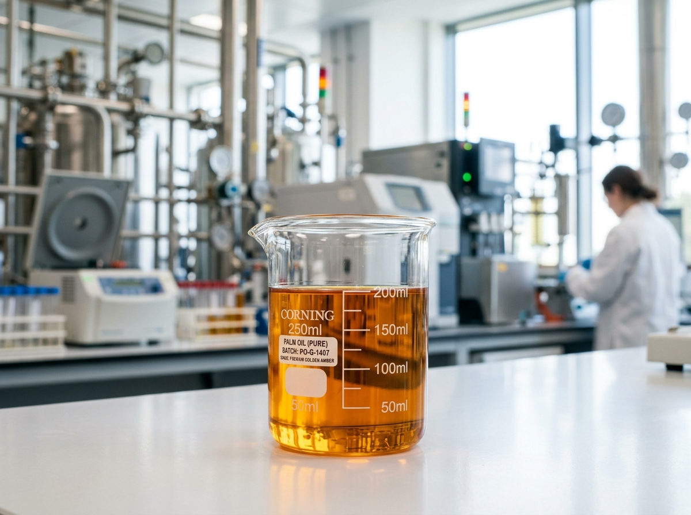
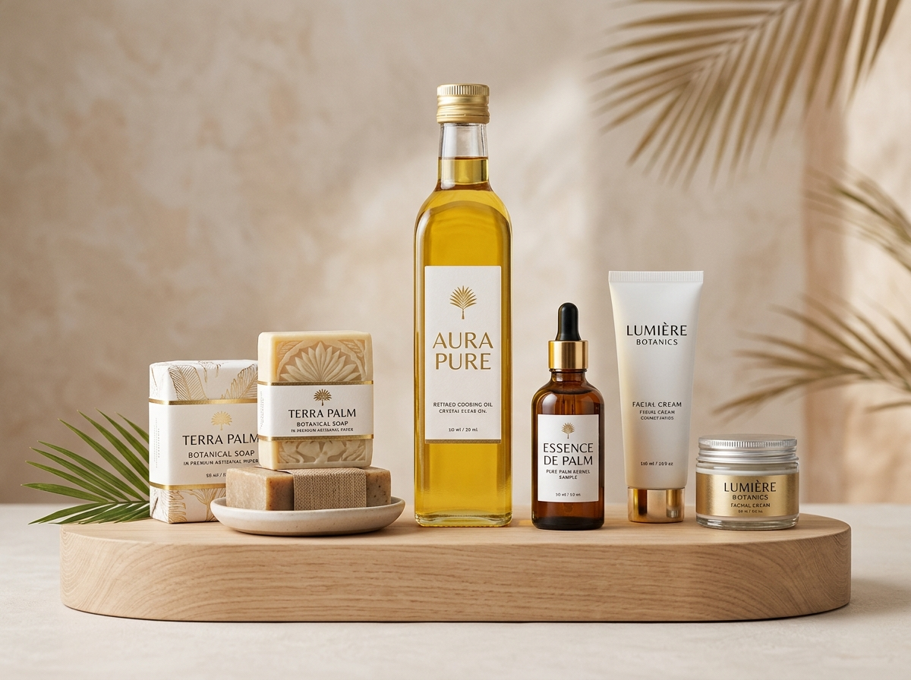
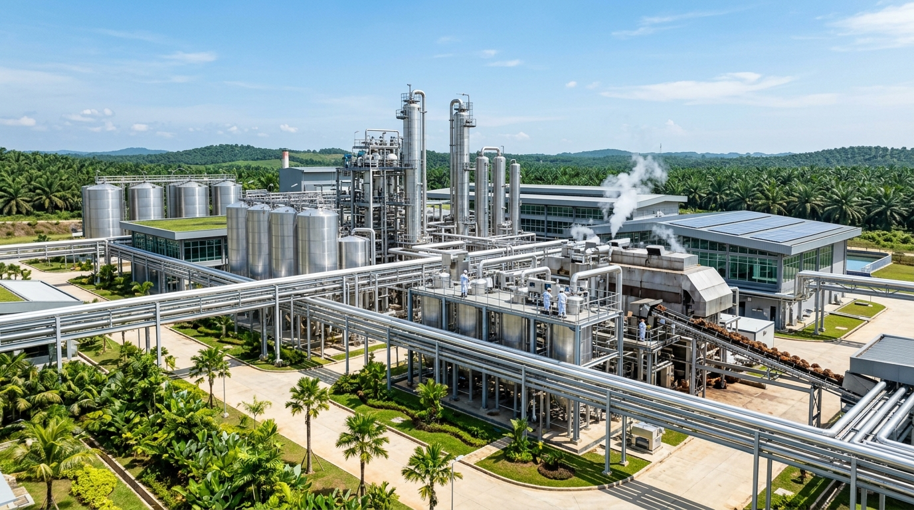

PT Nusa Sawit Agro Tbk mengelola perkebunan dan pabrik pengolahan kelapa sawit di Indonesia secara terpadu, menjunjung tinggi perlindungan ekosistem alam, dan memberdayakan puluhan ribu keluarga pekebun mandiri.

PT Nusa Sawit Agro Tbk didirikan dengan komitmen untuk membuktikan bahwa industri kelapa sawit Indonesia dapat tumbuh secara bertanggung jawab dan berkeadilan.
Kelapa sawit merupakan tanaman penghasil minyak nabati paling efisien per hektar dibandingkan kedelai, bunga matahari, maupun rapeseed. Melalui praktik agronomi yang baik (*Good Agricultural Practices*), kami memaksimalkan produktivitas lahan yang sudah ada tanpa melakukan konversi hutan alam baru, sekaligus menciptakan lapangan kerja yang layak bagi masyarakat pedesaan.
Membantu petani swadaya meningkatkan hasil panen dan mendapatkan sertifikasi internasional.
Melindungi 28.500 hektar hutan bernilai konservasi tinggi (HCV) dan sempadan sungai.
Pemanfaatan limbah cair dan padat pabrik menjadi energi mandiri dan pupuk organik.
Setiap pasokan buah sawit dapat ditelusuri kembali hingga ke kebun asal secara transparan.
Pengawasan mutu terpadu dari pemilihan benih unggul hingga pengiriman produk minyak sawit berkualitas ke pelabuhan tujuan.
Penggunaan bibit Dura x Pisifera (DxP) unggul tersertifikasi dengan potensi rendemen minyak tinggi, didukung pengelolaan nutrisi tanah berbasis analisis laboratorium.
Pabrik modern dengan kapasitas olah terpasang 310 ton TBS per jam. Pengolahan berlangsung dalam sistem tertutup untuk meminimalkan oksidasi dan menjaga mutu alami.
Limbah cair pabrik (POME) dialirkan ke instalasi penangkap gas metana, menghasilkan listrik terbarukan untuk operasional pabrik dan jaringan perumahan staf serta desa sekitar.
Fasilitas tangki timbun di Pelabuhan Dumai dan Balikpapan dengan kontrol temperatur presisi, siap didistribusikan ke pasar domestik maupun lebih dari 35 negara tujuan ekspor.
Kebijakan keberlanjutan kami berlandaskan prinsip *No Deforestation, No Peat, No Exploitation*. Kami menjaga agar aktivitas produksi tidak mengorbankan masa depan ekosistem hutan tropis Indonesia.
Seluas 28.500 hektar area hutan alami di dalam konsesi dipertahankan sebagai koridor perlindungan flora dan fauna dilindungi, termasuk orangutan dan burung endemik.
Tidak ada pembukaan lahan di area gambut baru. Pengelolaan tata air dilakukan dengan pintu air otomatis untuk mempertahankan tinggi muka air tanah di atas batas aman.
Penangkapan gas metana dari POME mereduksi lebih dari 450.000 ton emisi setara CO₂ setiap tahunnya, mendukung target penurunan emisi nasional.

Petani kecil mengelola lebih dari 40% dari total lahan kelapa sawit di Indonesia. Di Nusa Sawit Agro, kami menempatkan petani plasma dan swadaya sebagai mitra strategis jangka panjang, bukan sekadar pemasok buah.

Memenuhi spesifikasi industri pangan, oleokimia, dan nutrisi ternak untuk kebutuhan pasar domestik dan global.

Minyak sawit mentah dengan kemurnian tinggi dan asam lemak bebas rendah, ideal sebagai bahan baku kilang minyak makan dan energi nabati.

Fraksi cair hasil pemurnian CPO, jernih keemasan, stabil pada suhu pemanasan tinggi, serta bebas dari kandungan asam lemak trans.

Minyak inti sawit kaya asam laurat, digunakan secara luas pada formulasi sabun premium, deterjen, sampo, dan pelumas khusus industri.
Bungkil sawit hasil pengepresan mekanis biji inti sawit dengan protein kasar tinggi, diekspor rutin untuk kebutuhan peternakan sapi perah internasional.
Informasi mengenai perkembangan operasional, kemitraan sosial, dan pencapaian keberlanjutan perseroan.
Kementerian Lingkungan Hidup mengapresiasi keberhasilan perseroan dalam mengolah 100% limbah cair POME menjadi energi listrik mandiri untuk masyarakat sekitar kebun.
Baca Selengkapnya →Peningkatan permintaan pasar Eropa dan Asia terhadap minyak sawit dengan ketertelusuran penuh mendorong volume pengapalan perseroan sepanjang triwulan ketiga.
Baca Selengkapnya →Kebun mitra binaan swadaya yang menggunakan bibit DxP unggul mencatatkan produktivitas 21 ton TBS per hektar pada fase tanaman menghasilkan tahun keempat.
Baca Selengkapnya →Untuk pertanyaan terkait pemesanan komersial, hubungan investor, program kemitraan petani, atau verifikasi keberlanjutan, silakan hubungi tim kami.
Tim terkait kami akan menindaklanjuti korespondensi Anda.